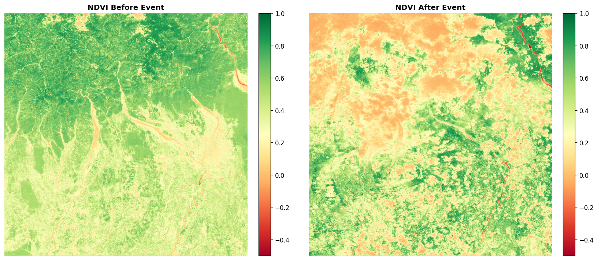
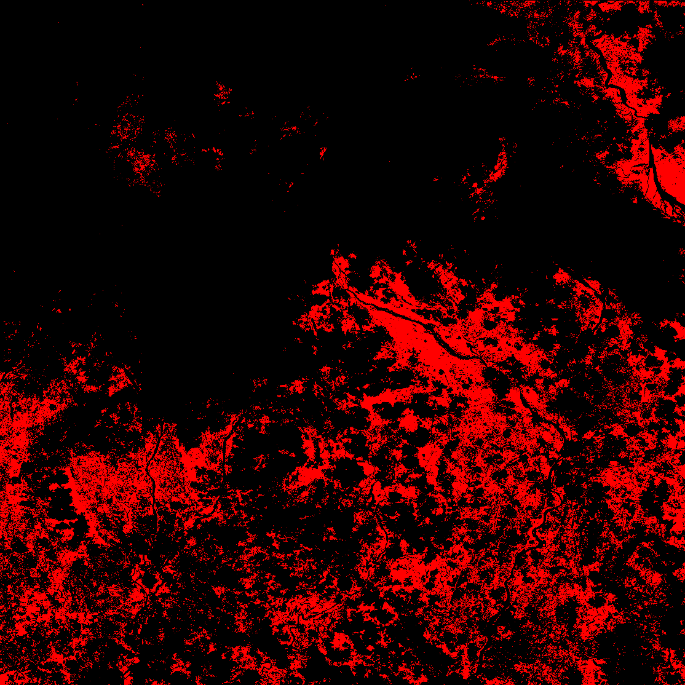

RISK
COMPOSITE RISK INDEX
- NDVI Severity (40 pts) -5
- Area Impact (35 pts) 21
- Class Weight (25 pts) 25
(180 p/km² avg density)
released / degraded
₹4,15,000/ha baseline
Higher = more abrupt
Dense / Healthy Canopy
DROP
Bare Soil / Rock
💧 HYDROLOGICAL IMPACT
⚠️ STABILITY & RISK INDICATORS
🌍 ENVIRONMENTAL & ECONOMIC FOOTPRINT





-
IMMEDIATE EVACUATION
Evacuate all settlements in downstream flow paths. Estimated ~103,540 persons may be at risk. Coordinate with district disaster management authority.
-
AERIAL SURVEY & GROUND TRUTH
Deploy drone or helicopter survey to validate detection boundaries and identify blocked drainage channels within 24–48 hours.
-
CONTINUOUS SAR MONITORING
Request Sentinel-1 SAR acquisitions every 6–12 days for cloud-penetrating repeat coverage. Compare with optical NDVI to track expansion.
-
DOWNSTREAM FLOOD ALERT
Flood risk classified as Moderate. Runoff increased by 12% (1.13× peak discharge). Install temporary gauges and alert downstream communities.
-
SEDIMENT & DEBRIS MANAGEMENT
Estimated debris volume: 2,300,894,400 m³ at avg depth 4.0 m. Inspect downstream channels for blockage. Annual sediment load estimate: -249,281 t/yr.
-
REFORESTATION PLANNING
Begin bioengineering (vetiver grass, contour bunds) within 3–6 months. Reforestation cost estimate: ₹14,32,30,67,640 INR. Target carbon restoration: 217,305 tonnes (796,857 t CO₂e).
-
ECONOMIC IMPACT DOCUMENTATION
Ecosystem loss: ₹6,01,21,19,276 INR. Insurance loss ratio: 10.5× annual premium pool. Document for claims, government relief, and carbon credit offset programs.
NOW — EMERGENCY PHASE
Active slide zone. Bare soil exposed. High secondary landslide and debris-flow risk. Immediate evacuation and stabilization needed.
CRITICAL WINDOWYEAR 1–7 — GROUND COVER RETURN
Pioneer grasses and mosses begin colonizing. Erosion rate starts declining. Active reforestation efforts should begin.
STABILIZATIONYEAR 8–20 — SHRUB / SECONDARY GROWTH
Shrubland develops. NDVI values may partially recover to ~0.30–0.45. Soil carbon begins rebuilding.
ECOLOGICAL RECOVERYYEAR 21–50 — FOREST REGENERATION
Secondary forest canopy established. NDVI returns toward pre-event values. Full biodiversity recovery may take longer.
LONG-TERM